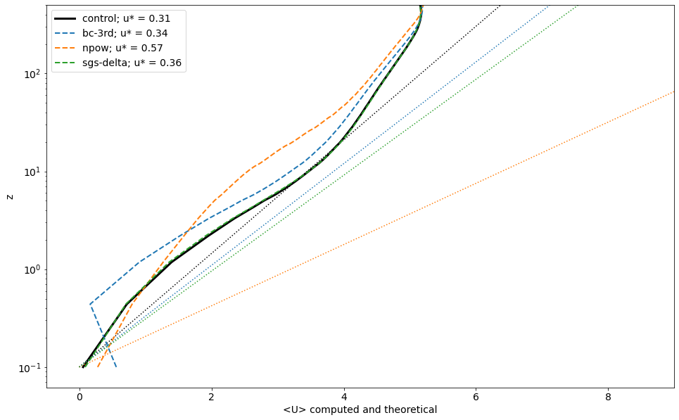
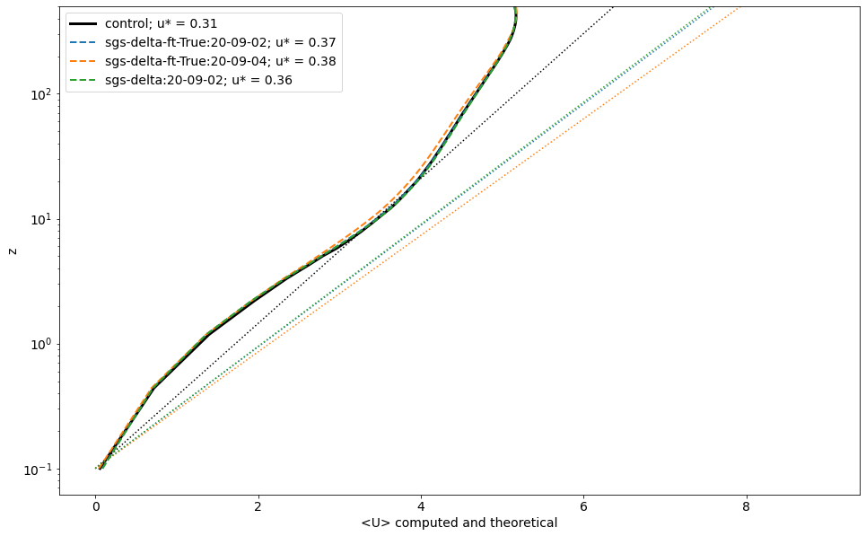

Recap of the baseline implementation
Stress boundary condition
$$\tau = \rho u_*^2 = \rho \left[ \frac{\kappa U}{\ln (z/z_0)}\right]^2$$
where the velocity are evaluated from the first and second grid levels:
$U = \sqrt{((u_1 + u_2)/2)^2 + ((v_1 + v_2)/2)^2}$
$z = (z_1 + z_2) / 2$
Parameters:
$\kappa = 0.41$ (von-Karman constant)
$z_0 = 0.1$ (roughness length)
“Constant” Smagorinsky sub-grid scale (SGS) model with wall damping
Total viscosity = $\nu + \nu_t$
Eddy viscosity, $$\nu_t = (C_s \Delta)^2 |S_{ij}|$$
where,
$S_{ij} = \frac{1}{2}(\nabla \mathbf{u} + \nabla \mathbf{u}^T)$ (symmetric part of strain tensor)
$C_s$ is wall damped as:
$$\frac{1}{C_s^n} = \frac{1}{C_0^n} + \left[ \frac{\Delta}{\kappa (z+z_0)} \right]^n$$
$\Delta$ is the length scale set as the grid spacing
Parameters:
$\nu = 1e-10, m^2/s$ (Kinematic viscosity)
$C_0 = 0.19$
$n = 0.5$
Experiments and modifications to the model
Case:
bc-3rdEvaluate boundary condition with:$U = \sqrt{((u_3 + u_4)/2)^2 + ((v_3 + v_4)/2)^2}$
$z = (z_3 + z_4)/2$
Case
npowSet $n=3.0$ as power for SGS wall dampingCase
sgs-deltaVary SGS length scale gradually as the maximum grid spacing within a spectral element and reduce $C_0$ to $0.15$.

Case
sgs-delta-ft-True: Modifications in case 3 + temporal filtering for $U$ while computing boundary condition as recommended in Yang et al. (PRF 2017)

Dynamic smagorinsky SGS model (work-in-progress)
Status: compiles, runs, but blows up. Implementation needs to be verified and tuned for our case.
Summary
bc-3rd: Shifting boundary conditions problematic because of Ekmann turning.npow: Indicates SGS model has a large impact on log-layer mismatchsgs-delta: Varying grid-length scale gradually has minor impact on the overall profile, but affects friction velocity $u^* = \sqrt{\tau_w}$sgs-delta-ft-True: Temporal filtering of wall boundary condition has no impactdyn-sgs-delta: No need for damping function